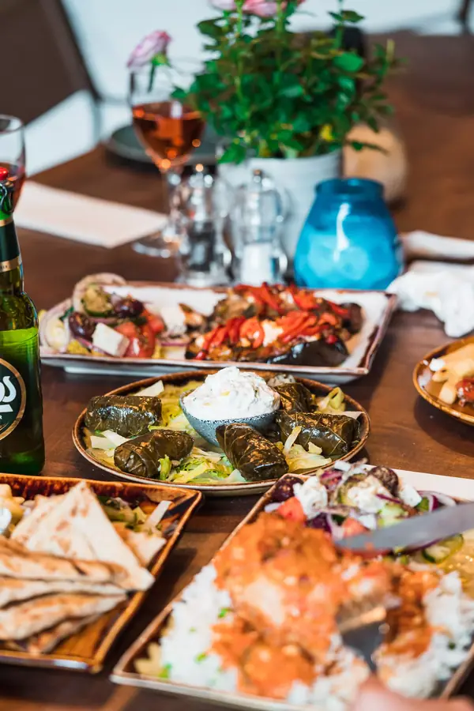

Concept概念改版提案，並非 Nostimo 官方網站。概念改版提案
9 Brunswick Centre, London WC1N 1AF020 7052 4471
καλώς ήρθατε
在下方選好時間，OpenTable 會立刻確認，不用等回覆。
訂位表單沒有出現？改到 OpenTable 網站訂位。

請撥 020 7052 4471，我們幫你安排座位。
當天訂位或特殊場合也請直接來電。
從地鐵羅素廣場站步行兩分鐘。
info@nostimo.london
每封來信都會由店裡的人親自回覆。